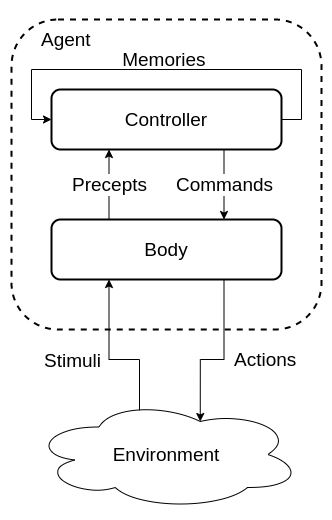
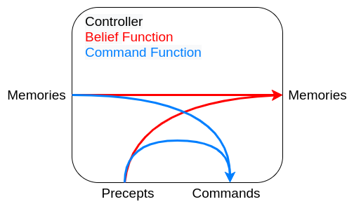
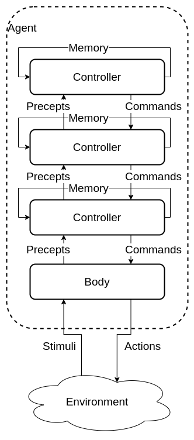
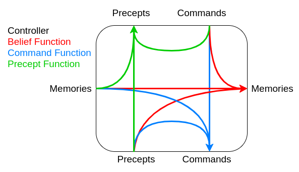

Rational Agents
Rational Agents
In a rational agent a goal can be specified by some performance metric.
A rational agent will choose the the actions that maximizes the expected value.
Inputs to an agent
- Abilities A set of actions that the agent can perform
- Goal What is the agent trying to achieve
- Prior Knowledge What sis the agent kno when it came into being
- History
-
- Stimuli: The current environment
-
- Past experiences
Agent System
An agent systems is an agent in an environment
receives **stimuli** and caries out **actions**
Dimensions of an Agent
An agent can be defined in many ways or dimensions that specifies its complexity and structure.
Modularity
How is the agent structured
- Flat Agent has one level.
- Modules Agent has many interlinking modules.
- Hierarchy Agent has a hierarchy(recursive) of modules.
Planning horizon
How far ahead is the agent expected to plan
- Static World does not change.
- Finite Stages The agent plans a finite number of steps.
- Indefinite The agent plans a finite but unknown number of steps.
- Infinite The agent plans continuously.
Representation
How is the environment represented
- Explicit states A state is one of the ways the world can be.
- Features or Propositions States can be described using features.
- Individuals and relations Feature of relationships between sets of individuals.
Computational limits
How is the agent limited by computation
-
Perfect rationality The agent can determine the best course of action.
- Bounded rationality The agent must make a good decision with computation and memory limitations.
Learning from experience
does the agent learn form experience
- Knowledge is given at creation.
- Knowledge is learnt from past experiences.
Sensing uncertainty
How well does the agent know its environment
- Fully observable The agent knows its entire environment.
- Partially observable There is a limited number of states, the observation is nto true to reality.
Effect uncertainty
Cant the result of an effect be known
- Deterministic The resulting state can be known form the previous state and action.
- Stochastic There us uncertainty about the environment after the action.
Preference
What is the agents desire
- Achievement goal The agent must reach a goal which could be the result of a complex formulae.
- Complex preferences The agent has a range of complex preferences that interact with one another.
-
- Ordinal Only the order of the preferences matters.
-
- Cardinal The value of the preferences matters.
Number of Agents
- Single Agent All other agents are part of the environment.
- Multiple Agent Agents will reason about the actions of other.agents
Interaction
How does the agent interact with the environment
- Reason offline reason before taking action.
- Reason online reason while taking action.
Representation
To compute a problem the problem must be in a computable representation before an output can be provided
Requirements
An representation should be
- Rich enough to express the knowledge needed
- As close to the problem as possible
- Amenable to efficient computation
- Able to be acquired
Solution
Quality of a solution
- Optimal Solution The best solution possible
- Satisfactory solution A solution that is good enough
- Approximate solution A solution that is close to an optimal solution
- Probable solution A solution that is likely to be correct
Decisions and Outcomes
Good decisions can have bad outcomes and Bad decisions can have good outcomes
Information can lead to better decisions.
Computation time can provide a better solution.
An Any time algorithm an produce a solution at any time but given more computation time the solution gets better
A worse solution now maybe be better than an optimal solution later.
Physical symbol Hypothesis
A symbol is a physical pattern that can be represented.
A symbol-system has the means to manipulate symbols.
hypothesis a Physical symbol system has the means for general intelligent action
Knowledge and symbol levels
- Knowledge level : Agent’s knowledge, beliefs and goals.
- Symbol level Describes what reasoning agent does. This is what the agent uses to implement the knowledge level
Abstraction
- Low level Easier for machines to understand
- High level Easier for humans to understand
Reasoning and acting
- Design time reasoning and computation Reasoning done by designer to design the agent.
- Offline computation Done by agent before it has to act
- Online computation Done by agent “on the go”
Knowledge base and observations
- Knowledge base Compiled background knowledge and data
- Observations Information obtained online
- Both used to make decisions
Agent Architectures
Agent architectures
Body
The agent interacts with the environment through the body
The body:
- Perceives stimuli form the environment and creates precepts for the controller
- Receives commands form the controller and generates actions on the environment
- In some cases may have actions that are not controlled
Controller
The controller is the brains of the agent and generates commands based on current and previous precepts. Controllers have a limited memory and computational resources
Agent logic
Traces
- Percept Trace A sequence of all percepts, past present and future.
- Command Trace A sequence of all commands, past present and future.
- Agent History A sequence of past and present commands and precepts at to time \(t\).
- transduction A function from percept traces to command traces.
- History Percepts to time \(t\) (including time \(t\)) + Commands to time \(t\) = History at \(t\)
- Causal transduction History at time \(t\) -> Command at \(t\)
- Controller An implementation of a causal transduction.
Belief Status
An agent has limited memory
It must decide what subset of its history to remember
This is the agents memory
At every step the controller needs to decide
- What to do
- What to remember
A belief status should approximate the environment
Single level hierarchy
In a single level hierarchy the agent has one body and a single controller.

functions
- Belief state function controls the next belief state / memories.
- Command state function decides on the commands the controller should produce.

Advantages
Simpler and can be easier to program
Disadvantages
All problems are processes together, e.g collision detection and long term planning
This can slow down the goals that need a quick response time
Multi level hierarchy
Made from a body and many layers of controllers.
Each controller acts as a virtual body to the controller above. It receives precepts and commands from the controller below it and sends selected precepts and commands to the controller above.

functions
- Belief state function controls the next belief state / memories.
- Command state function decides on the commands the controller should produce.
- Precept function decides what commands to send to the higher controller

Agent Types
Ideal Mapping
In principle an agent can be though of as an mapping from the set of precepts to the set of commands. There is a theoretical Ideal mapping where the ideal action is taken at each step. The simple approach would be a lookup table:
- Table too large
- Time to build
The goal of an agent is to approximate this ideal mapping
Simple Reflex agents
Simple agents based on a series of if -> else statements
Can achieve fairly complex behavior.
Can be run quickly
Reflex agent with State
similar to the simple Reflex Agents but retains knowledge
Needs an internal state
Can keep track of a changing world
Goal based agents
Keeps track of what is trying to be achieved
More flexible than a reflex agent
Utility based agents
Uses a Utility function to judge the state of the world
Allows for a choice of which goals to achieve and can select the one with the highest utility.
If goal outcomes are uncertain a probability formula can be used.
Learning Agent
Adds in several components
- critic Using a performance standard informs the learning agent how well it is doing.
- performance element responsible for acting based on the improvements from the learning agent.
- learning element responsible for making improvements with knowledge of the agents success.
- problem generator responsible for suggesting actions for new experiences to attempt to prevent being stuck at a local maximum
Takes information about hove the performance agent is doing and attempts to optimise the agent to improve performance. Learning provides the agent with autonomy.
Problem Formulation
Problem formulation
Given a specification of a solution, not an algorithm to follow
Agent has a a starting state and wants to get to the goal state
Many problems can ba abstracted into the problem of finding a path in a directed graph.
Problem solving steps
- Goal Formulation Identify a desirable solution
- Problem formulation - identify the problem
- Search find the sequence of actions
- Execution Perform the actions
types of Environment
- Deterministic, Fully observable
- The agent knows everything about the current state
- The agent knows what state the environment will be in after any action
- Deterministic, Partially observable
- The agent has limited access to the current state
- The agent can determine a set of states from a given action
- Instead of actions on a single state the agent must manipulate sets fo states
- Stochastic, partially Observable
- The agent has limited access to state
- The agent does not know the effect of any action
- Must use sensors to determine an effect
- Search and executions are interwoven
- Unknown state space
- Knowledge is learned
- (not a priority in the module)
State Space Problem
- Has a set of states \(S\)
- Start states A Subset of states where the agent can start
- action function Given a state and an action returns the new state
- goal states A subset of states that the agent targets
- A criterion that specifies the quality fo a solution
Abstraction
The real world is complex and so abstraction is uses
Abstract states are a subset of real states
Abstract operations are a combination of real actions
Abstract Solution A set of paths between states that are applicable to the real world
State space graph
A state space problem can be represented using a stat space graph
A state space graph consists of a set \(S\) of \(N\) nodes and a set of orders pairs \(A\) representing arcs or edges
if \(<S_i,S_j> \in S\) then \(S_i\) is a neighbor to \(S_j\)
A path is a sequence of nodes \(<n_1,n_2,n_3....n_i>\) such that \(<n_{i-1},n_i> \in S\)
Given a set of start and and nodes a solution is a path from a start node to an end node.
To solve these problems the ability to navigate a tree or graph is very useful.
Uninformed Search
Getting from a to b on a simple directed graph with no prior knowledge
following an informed search through a graph can simulate th exploration fo the state space
Tree Search
Algorithm
The exploration of an uninformed tree search tends follows the following algorithm.
node <- Root or starting node
goal <- a target goal
frontier <- some data store
frontier.add(node)
while (items in frontier){
current= frontier.RemoveTop()
if (current==goal){
return current
}
for (neighbor of current){
frontier.push(neighbor)
}
}
return none <- no solutions found
- node An element in a graph, continuing a parent and actions needed to reach its children
- frontier the nodes currently explored the type of data structure depends on the algorithm
Graph Search
With tree search state space with loops give rises to repeated states that cause inefficiencies.
Graph search is a practical way of exploring a state space that can account to such repetitions.
Rather than holding nodes in the frontier a graph search instead holds the path of nodes needed to reach the current point in the frontier.
node <- Root or starting node
goal <- a target goal
frontier <- some data store
frontier.add([node])
while (items in frontier){
current= frontier.RemoveTop()
if (current[last]==goal){
return current
}
for (neighbor of current[last]){
current.add(neighbor)
frontier.push(current)
}
}
return none <- no solutions found
Analysis
An algorithm can be judged by different metrics
- Completeness can the solution be found
- optimality does the solution find the solution with the least cost
- Complexity
- Judged by several factors
- b Maximum branch factor
- d Depth of least cost
- m maximum depth can be infinite
- time complexity how does the time taken scale
- space complexity how many nodes in memory
- Judged by several factors
Breath first
A queue is used for the frontier data store
Prioritizes expanding horizontally over expanding vertically
Complexity
-
completeness will always find a solution if b is finite
- time \(1 + b + b^2 +b^3 +...+ b^d = O(b^d)\)
-
space \(1 + b + b^2 +b^3 +...+ b^d = O(b^d)\)
- Optimal Yes if cost is a function of depth, not optimal in general
Space complexity is the biggest issue with this type of search
Depth first
A stack is used for the frontier data store Prioritizes expanding vertically over expanding horizontally
Complexity
- completeness Fails with infinite depth or loops
- can be modified to avoid loops
- time \(1 + b + b^2 +b^3 +...+ b^d = O(b^d)\)
-
space \(1 + b + b^2 +b^3 +...+ b^d = O(bm)\)
- Optimal No
Not optimal but cuts down on space complexity a lot
Lowest Cost First
A priority queue is used for the frontier data store where the key is the cost of the path.
The cost of a path is the current is the sum of the cost of each of it’s arcs.
The path of least cost is chosen first from the frontier to expand.
When arc costs are equal simply produces a breath first search.
Comparison
|Strategy|Frontier Selection|Complete|Halts| Space | |-|-|-|-|-| |Breadth-first| First node added| Yes | No | Exp| | Depth-first | Last node added | No | No | Linear| | Lowest cost first| minimal cost | Yes | No | Exp|
- complete- Guaranteed to fins a solution if one exists.
- Halts - on a finite graph (maybe with cycles).
- Space as a function of the length of the current path.
Informed Search
Using information about the goal to inform our path choice.
Heuristic
Extra information used to guide the path is called a heuristic
The heuristic \(h(n)\) is th estimated minimum cost to get form a node to the goal node
Calculating \(h(n)\) needs to be done efficiently
A \(h(n)\) function is an underestimate if there is no path from the node \(n\) to the goal with cost strictly less than \(h(n)\)
A heuristic is admissible if it is both:
- A non-negative function
- An underestimate of the actual cost
Best First Search
We can use the heuristic to determine the order fo the stack representing the frontier.
Select the path that is closest to the goal node, according to the heuristic function.
Greedy best-first search selects a path on the frontier with the lowest heuristic value.
A priority queue is used as the frontier.
This algorithm can get stuck in loops.
Complexity
Space: \(b^n\) where b is the branching factor and n is the path length
Time: \(b^n\)
Not guaranteed to find a solution
It does nto always find te shortest path
A* Search
A* search uses a combination os path cost and heuristic value to guess the length of a path too the goal if a particular node is chosen.
[f(p) = {cost}(p) + h(p)]
The frontier is a priority queue sorted by the \(f(p)\) function
The node on the frontier with the lowest estimated cost from the start to the goal via such node is chosen.
A* search is admissable if:
- The branching factor is finite
- Arc costs are bounded above Zero
- the function \(h(n)\) is non-negative and is an underestimate fo the shortest path of n to the goal node
Proof
It can be shown that the A* algorithm is admissable.
Let \(P\) be a path selected from the frontier to the goal node.
Suppose path \(P'\) is on the frontier, because \(P\) was selected before \(P'\) and \(h(p) =0\) \(cost(P) \leq cost(P') + h(P')\)
Because h is an underestimate \(cost(P') + h(P') \leq cost(P'')\) For any path \(P''\) that extends \(P'\) So \(cost(P) \leq cost(P'')\) for any path \(P''\) to a goal
Solution
Theorem: A* will always find a solution if there is one
The frontier always contains the initial part of a path to a goal
As A* runs the costs of the paths keeps increasing and will eventually exceed any finite number.
Admissability does nto guarantee that every node selected from the frontier is on an optimal path but that the first solution found wil be optimal even with graphs with cycles.
Heuristics
The performance of the A* algorithm depends on the performance of the heuristic, given a path \(P\) and a heuristic function \(h\) and \(c\) is the cost of the optimal solution the heuristic can fall into 3 categories.
\(cost(p) + h(p) \lt c\)(1) \(cost(p) + h(p) = c\)(2) \(cost(p) + h(p) \gt c\)(3)
A* expands all paths in the set \(\{cost(p) + h(p) \lt c\}\)
A* expands some paths in the set \(\{cost(p) + h(p) = c\}\)
Increasing the heuristic while keeping it admissable reduces the size of the sets.
Complexity
time: exponential in relative error of \(h*\) Length of solution
space: Exponential keeps all nodes in memory
Comparison
|Strategy|Frontier Selection|Complete|Halts| Space | |-|-|-|-|-| |Breadth-first| First node added| Yes | No | Exp| | Depth-first | Last node added | No | No | Linear| | Heuristic-depth-first | local min \(h(p)\)| No | No | Linear| | Best-first | Global min \(h(p)\)| No | No | Linear| | Lowest cost first| minimal cost | Yes | No | Exp| | A*| minimal \(f(p)\) | Yes | No | Exp|
- complete- Guaranteed to fins a solution if one exists.
- Halts - on a finite graph (maybe with cycles).
- Space as a function of the length of the current path.
Search Optimizations
Cycle Checking
The search encounters a node on a path that it has already encountered (the path traversed a cycle)
Solution
Prune the path as it is not an optimal path so does not need to be explored
Implementation
Keeping the nodes in the path in a hash table allows for checking in constant \(O(1)\) time.
Multiple Path Pruning
Two paths may meet at the same note, one taking a longer path anther a shorter one.
Solutions
- If the expanding path is shorter it can be pruned
- Otherwise if the expanding path \(<s,..n>_1\) is shorter than the current path \(<s,..n,..m>_2\) for subpath \(<s,..n>_2\) then
- Employ a strategy to prevent this from happening
- Remove all paths from the frontier that include subpath \(<s,..n>_2\)
- Change the initial segment of the paths on the frontier to use the shorter path. All paths containing \(<s,..n>_2\) has the subpath replaced with \(<s,..n>_1\)
Implementation
Maintain a set of explored set (closed list) of nodes.
Initially the closed list is empty
When a path is selected if the endpoint in the closed list then a conflict has emerged otherwise add the endpoint to the closed list.
Implementation with A*
Suppose path \(p'\) to \(n'\) was selected but there is a lower cost path to \(n'\) Suppose this is via point \(p\) on the frontier.
let path \(p\) end at node \(n\)
by A* \(p'\) was selected before \(p\) i.e \(f(p')<f(p)\)
[cost(p’) + h(p’) \leq cost(p)+h(p)]
The path of \(n'\) via \(p\) is lower cost than via \(p'\)
[cost(p)+ cost(n,n’) \lt cost(p’)]
[cost(n,n’) \lt cost(p’)- cost(p) \leq h(p) -h(p’) = h(n)-h(n’)]
we can ensure that this does not occur if
[\vert h(n) - h(n’) \vert \leq cost(n,n’)]
The heuristic is a monotone restriction
Monotone Restriction
A heuristic function satisfies the monotone restriction if \(\vert h(m) - h(n) \vert \leq cost(m,n)\) for every arc \(<m,n>\)
If h satisfies the monotone function is is consistent meaning \(h(m) \lt cost(m,n) + h(n)\)
A* with a consistent heuristic and multiple path pruning always finds the shortest path to a goal
Direction of a Search
A search can be thought of as symmetric
Shortest path from start to end
equals
Shortest path from end to start
Forward branching factor number of arcs that are leaving ths node
Backwards branching factor number of arcs that are entering ths node
Search complexity is b^n so use forward is forward branching factor \(\lt\) backwards branching factor.
However when a graph is dynamically constructed the backwards graph may not be available.
Bi-directional Search
Search backwards from the goal and the start simultaneously
This can be effective since \(2b^{k/2} \lt b^k\)
Implementation can vary however one strategy is to do a breath first stack to generate a rangd of targets then to do anther strategy like depth first to find the most optimal strategy.
Island Driven Search
This process expands on the idea of multiple hops to many hops between islands.
Find a set of m islands between the start and end.
There are m smaller problems \(mb^k/m \lt b^k\)
There are issues to overcome:
- Identifying island can be difficult
- Hard to guarantee optimality
Dynamic Programming
For statically stored graphs, build a table of dist(n) the actual distance form node n to a gaol
This can be build backwards from the goal:
This can be used locally to determine what to do
There are two main problems
- It requires enough space
- The dist function needs to be recomputed for each goal
Bounded Depth-first search
A bounded depth first search takes a bound (cost or depth) and does nto exceed paths that exceed the bound
- Explores part of the search graph
- Uses space linear in the depth of the Search
Iterative-deepening search
- start with a bound b=0
- Do a bounded depth-first search with bound b
- If a solution is found return that solution
- Otherwise, increment b and repeat
Finds the same first solution as breadth first search.
As is based on depth first uses linear space.
Iterative deepening has an overhead of \((\frac{b}{b-1}) *\) cost of expanding nodes at depth \(k\).
When \(b=2\) there is an overhead factor of \(2\) when \(b=3\) there is an overhead of \(1.5\) as b gets higher, the overhead factor reduces.
Depth-first Branch-and-Bound
Combines depth-first search with heuristic information and finds the optimal solution.
Most useful when there are multiple solutions and we want an optimal one.
Uses the space of depth-first search.
let bound be the lowest-cost path found to a goal.
If the search encounters a path p where \(cost(p)+h(p) \geq bound\) the path can be pruned.
If a non - pruned path to the goal is found then bound can be set to \(cost(p)\) and p is set to the best solution.
Initializing Bound
- Bound can be initialized to \(\infty\)
- Bound can be set to an estimate of the optimal path cost
- After depth-first search terminates either
- A solution was found
- No solution was found and no path was pruned
- No solution was found and a Path was pruned
Can be combined with iterative deepening to increase the bound until either a solution is found or to show there is no solution
Heuristics
The choice of a heuristic to choose can have a large impact in the efficiency and running time of the search.
Characterizing Heuristics
Def: If an A* tree-search expands N nodes and solution depth is d, then the effective branching factor b*, is the branching factor a uniform tree of depth d would have to contain N nodes.
[N = 1 + b* + (b)^2 + .. + (b)^d]
It is desirable to obtain a branching factor as close to one as possible, a smaller branching factor allows a larger problem to be solved.
We can estimate b* experimentally and it is usually consistent when performed over multiple runs.
If the branching factor of one heuristic is smaller then it should be used.
More specifically if
[h_1(n) \geq h_2(n) \forall n]
then \(h_1\) dominates \(h_2\)
A* expands all nodes with \(f(n) <f*\) where \(f*\) is the cost of the optimal path. All nodes with \(h(n)\lt f*=g(n)\) expanded
An admissable heuristic with higher values is better.
The computation for the heuristic should be taken into account as well.
Deriving heuristics
Relaxed problems
Admissible heuristics can be derived from a relaxed problem.
A relaxed problem is obtained by reducing the restrictions on operations.
e.g
- Get from the start node to the end node by traversing the graph
- Get from the start node to the end node
If there are several heuristics and none dominate then the maximum heuristic from the set may be chosen for any given value of \(n\), more formally:
[h(n) = max(h_1(n) , h_2(n) …)]
Pattern Databases
Store exact solution costs for each possible sub problem instance.
Heuristic \(h_{DB}\) = cost of solution ot corresponding subproblem.
Construct database by searching backwards from goal.
Other approaches
- Statistical approaches
- Gather probable heuristics from training problems
- e.g if \(95%\) of all cases \(cost(n,goal)\) is 20 then \(n(n)=20\)
- Not admissable but still likely to expand less
- Select Features of a state to contribute to the heuristic
- e.g For Chess number/ type of pieces left
- Can use learning to determine weighting